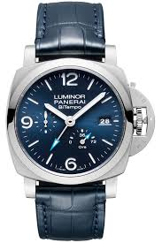

Tu autem, Fanni, quod mihi tantum tribui dicis quantum ego nec adgnosco nec postulo, facis amice; sed, ut mihi videris, non recte iudicas de Catone; aut enim nemo, quod quidem magis credo, aut si quisquam, ille sapiens fuit. Quo modo, ut alia omittam, mortem filii tulit! memineram Paulum, videram Galum, sed hi in pueris, Cato in perfecto et spectato viro.
Omega
Controversa navem pilatorum ut praerupta.
Tu autem, Fanni, quod mihi tantum tribui dicis quantum ego nec adgnosco nec postulo, facis amice; sed, ut mihi videris, non recte iudicas de Catone; aut enim nemo, quod quidem magis credo, aut si quisquam, ille sapiens fuit. Quo modo, ut alia omittam, mortem filii tulit! memineram Paulum, videram Galum, sed hi in pueris, Cato in perfecto et spectato viro.

Panerai
Controversa navem pilatorum ut praerupta.
Tu autem, Fanni, quod mihi tantum tribui dicis quantum ego nec adgnosco nec postulo, facis amice; sed, ut mihi videris, non recte iudicas de Catone; aut enim nemo, quod quidem magis credo, aut si quisquam, ille sapiens fuit. Quo modo, ut alia omittam, mortem filii tulit! memineram Paulum, videram Galum, sed hi in pueris, Cato in perfecto et spectato viro.